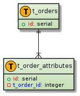

Entity Layout
Overview
- 本ドキュメントは、DB の Entity Layout について記載する。
Transaction tables
- トランザクションテーブルのレイアウトは以下の通りとなる。
E-R diagram

company_informations
- 緑はトランザクションテーブル。赤は中間テーブル。
users
users (ユーザー情報の管理)
N/A・・・該当なし
- 同じテーブル内でデータの出し入れがあった際にNullable or NOT NULLの判定が走っているのかを確認。
| Field | Type | Collation | Nullable or NOT NULL | Key | Default | Extra | Description |
|---|---|---|---|---|---|---|---|
| id | int(11) | NOT NULL | UNIQUE | N/A | auto_increment |
- デフォルトの数字など
| Value | Description |
|---|---|
| 1 | 管理者 |